Welcome to Abstract painting tutorial. Here you can learn a lot about abstract painting and how it can be made by step be step. I hope you will enjoy the whole journey of learning the process.
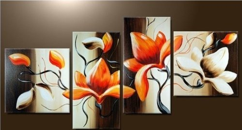My name is Prabhjot Kaur. I am a student of Mobile Application Design and Development.
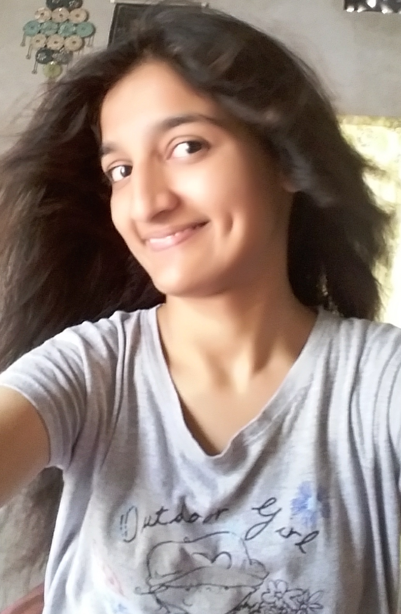How many times have you looked at an abstract painting and heard someone say, "I could do that!"? While abstract painting looks easy to some, it can actually be more challenging than traditional or classical painting. It's up to you as the artist to break rules, be expressive, and decide what is art. First, prepare to paint and hit the start button
Start TutorialAt their most basic, a color wheel is divided into three parts:
Primary colors Secondary colors Tertiary colorsTo become familiar with color creation, try making your own color wheel.
NextThe are three primary colors:
REd
Blue
Yellow
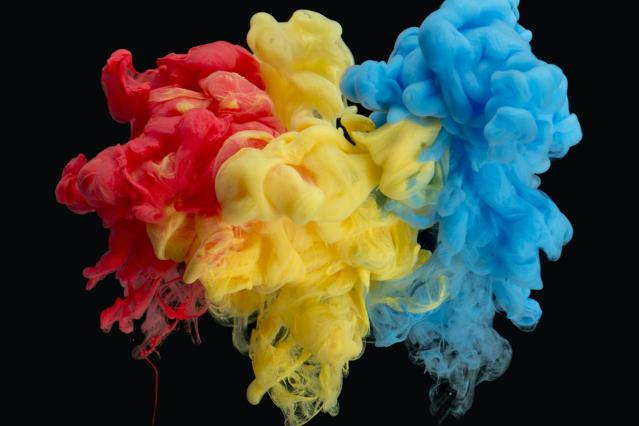Secondary colors are created by mixing the primary colors together.There are three Secondary colors:
Green
Orange
Purple
Tertiary colors can me made by mixing the secondary and tertiary colors are:
yellow-orange
red-orange
red-purple
blue-purple
blue-green
yellow-green
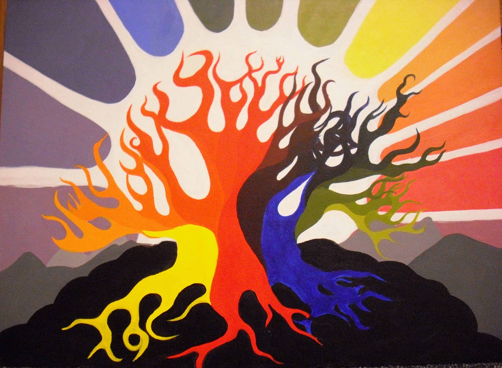You can buy a ready made canvas of any size in a craft store
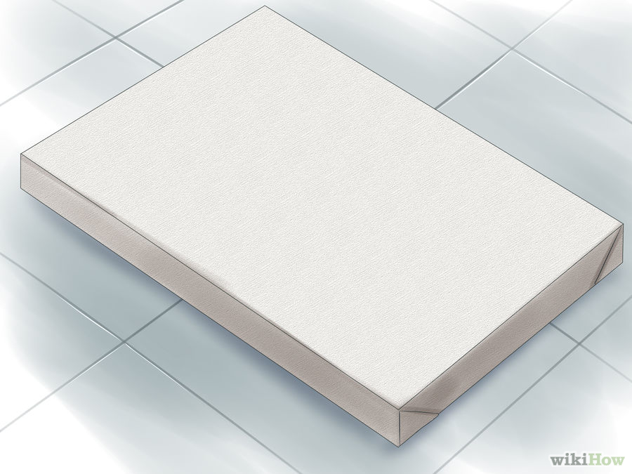Pick whatever brushes you like to use with the paint you've already chosen. You might also consider using a palette knife to apply paint, giving it a textured look. While some artists like to use an easel, many abstract artists choose to place their canvases directly on the floor in order to be closer to the work.
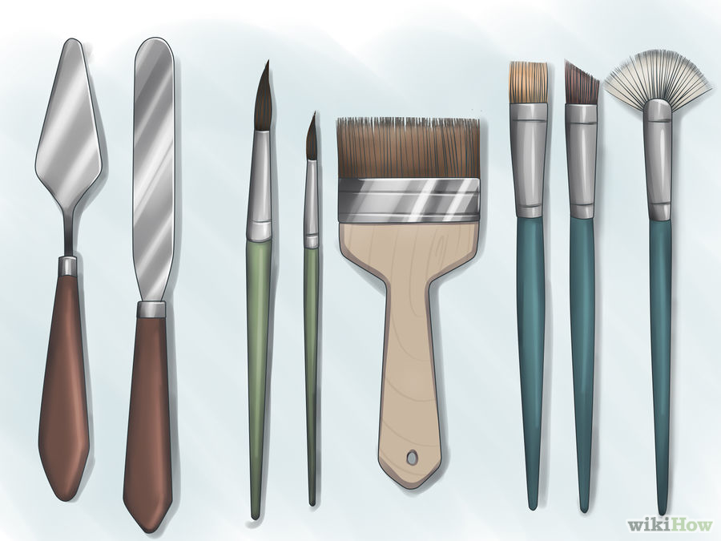Decide whether to use acrylics or oil paint. Acrylics have no odor and are easy to work with since they dry fast and can be painted over if you make a mistake. Oils, on the other hand, aren't usually used because they take longer to dry, have an odor, and do not allow you to paint over mistakes.
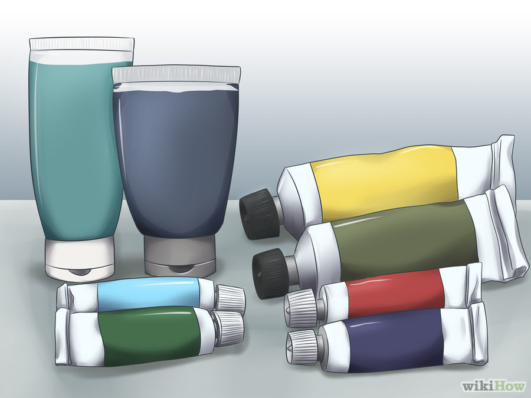 Previous NextOne of the easiest ways to do this is to apply artist-quality Gesso, a thick gel-like primer. Apply it like paint, or spread it around with a palette knife, if it's thick enough. This will allow you to control the style of the texture.
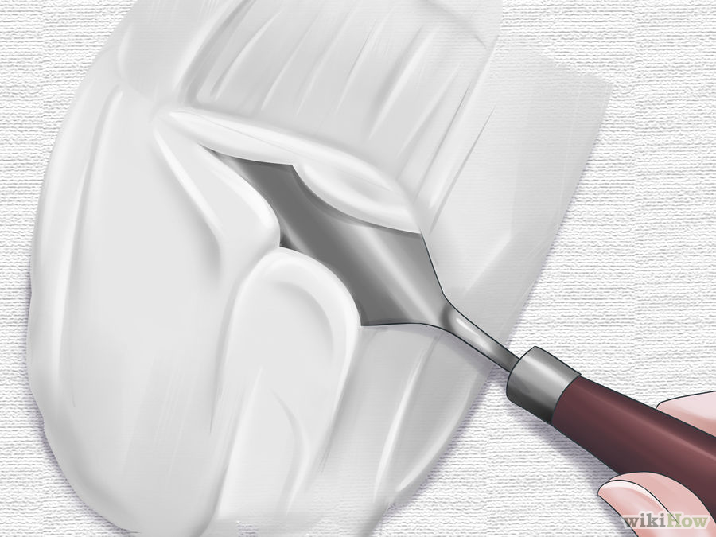You could also leave the canvas smooth and blank. Again, there are no rules for abstract art saying you must have a textured background. Many artists simply start painting on a blank canvas.
Previous NextUse blue painter's tape and place several lines, creating geometric shapes, such as triangles, squares, and rectangles. The goal is to create images that aren't representative of reality. The taped lines will help you paint Painter's tape will ensure that your painting has crisp, clear lines and shapes.
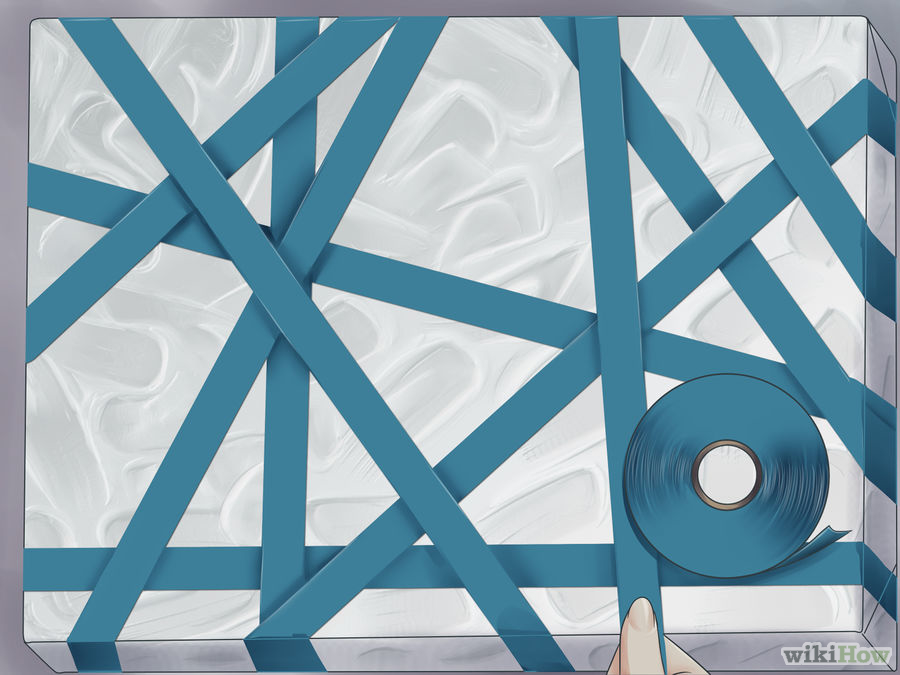Use rulers and pencil lines instead of tape. If you don't want to deal with the gaps that the painter's tape will cause when you remove it, try marking your canvas using a ruler and pencil. Again, lay your ruler down across several points to create geometric shapes.
Previous NextDecide which colors you'll be using to complete your painting. Mix them on an artist's palette or plate. You could also mix the colors directly on the canvas, but this will take away some control over the finished look.
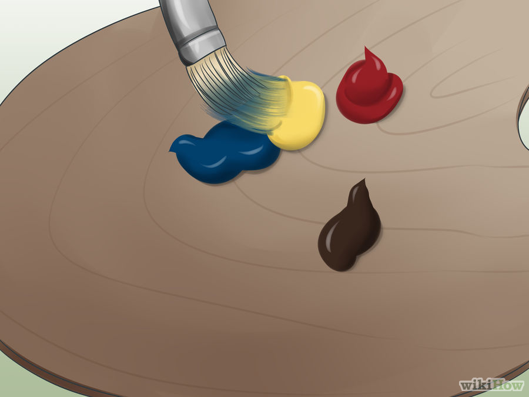Don't worry if you happen to get paint on the painter's tape. Also, don't feel as though you must fill your entire canvas, or all of the shapes, with color.
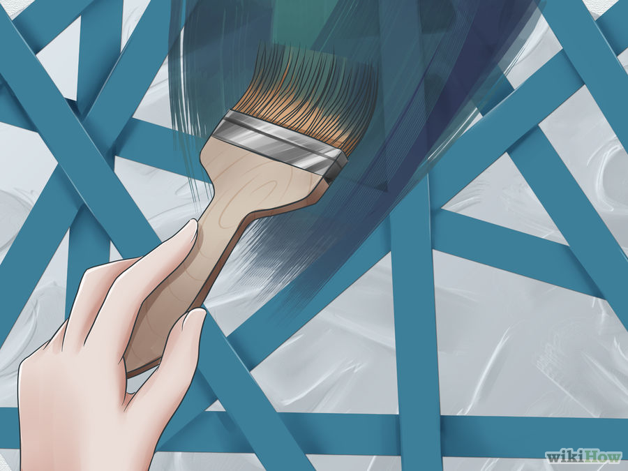 Previous NextAs soon as you've decided the painting is complete, remove the painter's tape. If you'd like crisp, clear edges, remove the tape while the paint is still wet. If you remove the tape from a dry painting, it's liable to pull paint away with it, creating slightly rough edges.
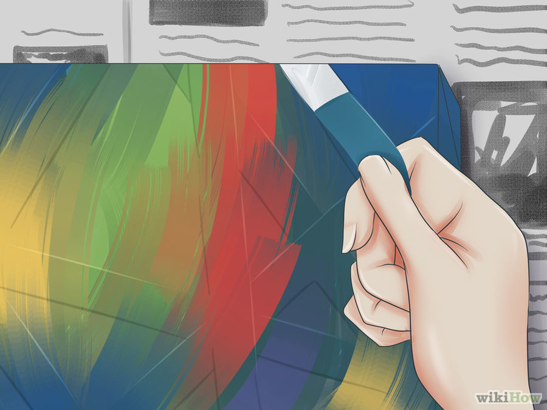Previous Next